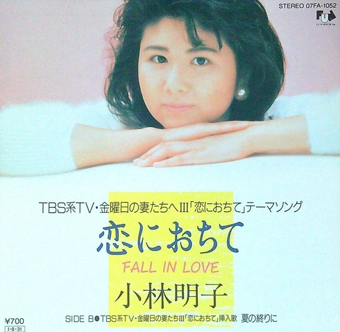

たかじいのお気に入り
← レコード棚に戻る
恋におちて -Fall in love- 小林明子

発売日
1985年
作詞
湯川れい子
作曲
小林明子
編曲
－
メディア
17㎝シングルレコード（ドーナツ盤）
YouTubeで見る
小林明子さんのデビュー曲です。 歌詞の半分が英語になっているのが当時としては珍しく、 とても斬新でおしゃれな感じがしたのを覚えています。 曲調もなめらかで、ゆったりとおおらかな一曲です。
歌詞の中にある「ダイヤル回して手を止めた」という部分は、 今では想像しにくいかもしれません。
昔の電話はダイヤル式（回転式）だったので、 電話をかけようとして番号を回している途中で手を止めることで、 電話をかけることをためらう気持ちを表しているのでしょう。
番号を押すだけで電話をかけられる現在とは大きな違いです。 電話をかけるという何気ない動作の中にも、 「かけようか、どうしようか」と躊躇して迷う時間がありました。
この曲を聴くと、そんな時代の電話には、 今よりも人の”思うこころ”のような気持ちが動作として表れていたような 気がします。
テレビドラマ「金曜日の妻たちへIII 恋におちて」の主題歌でした。
歌詞より
♪♪ ダイヤル回して手を止めた I'm just a woman Fall in love ♪♪
歌ネットで歌詞を見る
← レコード棚に戻る
歌詞の中にある「ダイヤル回して手を止めた」という部分は、 今では想像しにくいかもしれません。
昔の電話はダイヤル式（回転式）だったので、 電話をかけようとして番号を回している途中で手を止めることで、 電話をかけることをためらう気持ちを表しているのでしょう。
番号を押すだけで電話をかけられる現在とは大きな違いです。 電話をかけるという何気ない動作の中にも、 「かけようか、どうしようか」と躊躇して迷う時間がありました。
この曲を聴くと、そんな時代の電話には、 今よりも人の”思うこころ”のような気持ちが動作として表れていたような 気がします。
テレビドラマ「金曜日の妻たちへIII 恋におちて」の主題歌でした。